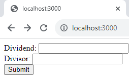

Nội dung bài học
Khái niệm "web application framework" (nền tảng hay khung ứng dụng web) là một tập hợp các công cụ, thư viện, quy tắc và mô hình thiết kế đã được xây dựng trước để giúp phát triển ứng dụng web một cách hiệu quả và có cấu trúc. Các framework này cung cấp một nền tảng để xây dựng ứng dụng web bằng cách giảm bớt công việc lặp lại và cung cấp giải pháp chuẩn để giải quyết các vấn đề phổ biến.
Một số đặc điểm quan trọng của web application framework bao gồm:
Ví dụ về một web application framework phổ biến là Ruby on Rails (được viết bằng ngôn ngữ Ruby) hay Express (được viết bằng ngôn ngữ Javascript).
Express.js là một framework phát triển ứng dụng web phía máy chủ (backend) được xây dựng trên nền tảng Node.js. Nó giúp đơn giản hóa quá trình xây dựng các ứng dụng web bằng cách cung cấp các tính năng mạnh mẽ và gọn nhẹ.
Express.js cho phép chúng ta xây dựng các ứng dụng web và API một cách nhanh chóng và dễ dàng. Nó tuân thủ mô hình MVC (Model-View-Controller), tách biệt các phần khác nhau của ứng dụng như xử lý yêu cầu, xử lý logic và hiển thị dữ liệu. Điều này giúp giảm độ phức tạp của ứng dụng và tăng khả năng bảo trì và mở rộng trong tương lai.
Mô hình MVC (Model-View-Controller) là một kiến trúc thiết kế phổ biến trong phát triển ứng dụng web, bao gồm Express.js. Mô hình này giúp tổ chức và quản lý mã nguồn một cách hiệu quả bằng cách chia ứng dụng thành ba phần chính: Model, View và Controller.
Dưới đây là mô tả chi tiết về mô hình MVC trong Express:
Ví dụ minh họa:
Mô hình MVC giúp tách biệt logic ứng dụng thành các phần riêng biệt, giúp dễ quản lý, bảo trì và mở rộng ứng dụng web.
Express.js là một framework phát triển ứng dụng web phía máy chủ (backend) được xây dựng trên nền tảng Node.js. Nó giúp đơn giản hóa quá trình xây dựng các ứng dụng web bằng cách cung cấp các tính năng mạnh mẽ và gọn nhẹ.
Express.js cho phép chúng ta xây dựng các ứng dụng web và API một cách nhanh chóng và dễ dàng. Nó tuân thủ mô hình MVC (Model-View-Controller), tách biệt các phần khác nhau của ứng dụng như xử lý yêu cầu, xử lý logic và hiển thị dữ liệu. Điều này giúp giảm độ phức tạp của ứng dụng và tăng khả năng bảo trì và mở rộng trong tương lai.
Các khái niệm cơ bản của Express.js bao gồm:
Express.js là một framework mạnh mẽ và phổ biến trong cộng đồng phát triển web. Nó giúp chúng ta xây dựng các ứng dụng web phía máy chủ một cách nhanh chóng, linh hoạt và dễ dàng mở rộng. Sau đây chúng ta sẽ tìm hiểu chi tiết về các khái niệm và thao tác trong Express.
Trong thư mục MyNodeJS tạo thư mục EXPRESS chứa các tập tin liên quan ứng dụng Express.
Trong VS Code mở Terminal và điều hướng đến thư mục EXPRESS trên.
Khởi tạo ứng dụng Express dùng lệnh: npm init -y
Lệnh trên sẽ tạo ra một tập tin package.json trong thư mục EXPRESS, nơi chúng ta có thể quản lý các phụ thuộc và cấu hình ứng dụng của mình.
Cài đặt Express bằng cách gõ lệnh: npm install express
Lệnh trên sẽ cài đặt Express và các phụ thuộc của nó vào thư mục node_modules trong ứng dụng của chúng ta.
Tạo tập tin tên app.js trong thư mục EXPRESS để cấu hình ứng dụng Express với nội dung sau:
Trong đoạn mã trên, chúng ta đã tạo một ứng dụng Express, định nghĩa một route (sẽ tìm hiểu chi tiết hơn trong phần tiếp theo của bài này) cho đường dẫn gốc / và trả về một thông báo "Hello, Express!" khi có yêu cầu đến.
Chạy ứng dụng Express bằng cách thực thi lệnh sau để khởi động máy chủ và lắng nghe yêu cầu: node app.js
Bây giờ, chúng ta có thể truy cập vào http://localhost:3000 trên trình duyệt để xem thông báo "Hello, Express!".
Trên đây là các bước cơ bản để cài đặt và tạo ứng dụng đầu tiên với Express.js. Chúng ta có thể tiếp tục mở rộng ứng dụng và thêm các route và logic xử lý theo yêu cầu của mình trong các phần sau.
Truy cập Glitch và chọn dự án Hello Node.
Chọn Terminal và gõ lệnh npm install express để cài Express.
Sao chép nội dung từ tập tin app.js để thay thế nội dung mặc định trong tập tin server.js. Xem và kiểm tra kết quả từ khung bên phải.
Chú ý: Chúng ta có thể tạo một tập tin tên app.js nhưng cần cấu hình lại trong tập tin package.json của Glitch.
Trong Express.js, khái niệm Route đóng vai trò quan trọng trong việc xác định cách xử lý yêu cầu HTTP từ client đến server. Một route được xác định bởi một đường dẫn (URL) và một phương thức HTTP tương ứng (GET, POST, PUT, DELETE, vv.). Khi có một yêu cầu được gửi đến server, Express.js sẽ kiểm tra các route đã được định nghĩa để tìm ra route phù hợp và thực hiện xử lý tương ứng.
Một route trong Express.js có thể được định nghĩa bằng cách sử dụng phương thức tương ứng của ứng dụng Express (get(), post(), put(), delete(), vv.). Mỗi phương thức này nhận vào hai tham số: đường dẫn và một hàm xử lý (handler) để thực hiện khi route được truy cập.
Dưới đây là một ví dụ hoàn chỉnh về việc sử dụng route trong Express.js:
Lưu đoạn mã trên thành tập tin express_route.js trong thư mục EXPRESS. Gõ lệnh: node express_route.js
Truy cập vào http://localhost:3000 trên trình duyệt:
Truy cập vào http://localhost:3000/about trên trình duyệt:
Truy cập vào http://localhost:3000/users?name=Minh trên trình duyệt:
Chú ý: Chúng ta có thể thực hiện trên Glitch tương tự ví dụ Tạo ứng dụng Express đầu tiên ở trên.
Trong ví dụ trên:
Trong Express.js, Middleware là các hàm được chạy tuần tự trên đường đi của yêu cầu HTTP từ client tới server. Nó cho phép chúng ta thực hiện các tác vụ như xử lý yêu cầu, trung gian ghi log, kiểm tra quyền truy cập, xử lý lỗi và nhiều hơn nữa. Middleware giúp tách biệt logic xử lý thành các bước nhỏ và tái sử dụng code một cách dễ dàng. Cách sử dụng Middleware trong Express.js:
Dưới đây là một ví dụ hoàn chỉnh về việc sử dụng và viết Middleware trong Express.js:
Lưu đoạn mã trên thành tập tin express_middleware.js trong thư mục EXPRESS. Gõ lệnh: node express_middleware.js
Truy cập vào http://localhost:3000 trên trình duyệt:
Chú ý: Chúng ta có thể thực hiện trên Glitch tương tự ví dụ Tạo ứng dụng Express đầu tiên ở trên.
Trong ví dụ này:
Khi chúng ta chạy ứng dụng này và truy cập địa chỉ http://localhost:3000 trong trình duyệt, chúng ta sẽ thấy rằng Middleware đã ghi log thông tin về yêu cầu đến server mỗi khi chúng ta truy cập trang. Middleware là một cách mạnh mẽ để thêm các chức năng trung gian vào ứng dụng Express của chúng ta, như xác thực, ghi log, kiểm tra quyền truy cập và nhiều công việc khác.
Trong Express.js, Template engine (bộ công cụ mẫu) là một công cụ giúp chúng ta tạo ra các trang HTML động dựa trên dữ liệu được truyền vào từ ứng dụng. Template engine cho phép chúng ta kết hợp HTML tĩnh với các dữ liệu động, điều này giúp rất nhiều trong việc tạo các trang web động và tái sử dụng các thành phần giao diện.
Express.js cung cấp nhiều loại template engine khác nhau để tạo ra các trang HTML động (Tham khảo các template engine tại đây). Dưới đây là một số loại template engine phổ biến:
Mỗi loại template engine có cú pháp và tính năng riêng biệt. Lựa chọn loại nào phụ thuộc vào sở thích và nhu cầu cụ thể của chúng ta. Express cho phép chúng ta dễ dàng tích hợp bất kỳ template engine nào chúng ta chọn thông qua việc cài đặt và cấu hình phù hợp. Sau đây là minh họa cách sử dụng 2 kiểu template engine Pug và Handlebars (Sử dụng VS Code, trong Glitch tương tự các ví dụ trên).
Như mô tả cách sử dụng Pug, chúng ta cần tạo thư mục views trong thư mục EXPRESS để chứa các tập tin có phần mở rộng là .pug
Mở Terminal từ VS Code và điều hướng đến thư mục MyNodeJS/EXPRESS.
Cài đặt Template engine Pug dùng lệnh: npm install pug
Trong thư mục EXPRESS tạo tập tin express_pug.js có nội dung sau:
Trong thư mục EXPRESS tạo thư mục tên views chứa tập tin index.pug có nội dung sau:
Thực thi ứng dụng: node express_pug.js. Truy cập http://localhost:3000 xem kết quả
Như mô tả cách sử dụng Express Handlebars, Express sẽ tìm thư mục views chứa tập tin home.handlebars (hay index.handlebars) và thư mục con layouts chứa tập tin mặc định main.handlebars. Trong ví dụ này chúng ta không cần dùng thư mục layouts nên sẽ phải cấu hình lại dùng layoutsDir và defaultLayout.
Mở Terminal từ VS Code và điều hướng đến thư mục MyNodeJS/EXPRESS.
Cài đặt Template engine Pug dùng lệnh: npm install express-handlebars . Chú ý phiên bản express-handlebars hiện tại có thể không tương thích với phiên bản Node chúng ta đang dùng (cũ hơn). Lúc này chúng ta cần cài express-handlebars với phiên bản thấp hơn dùng lệnh: npm install express-handlebars@version với version là số hiệu phiên bản chúng ta muốn cài đặt. Tham khảo chi tiết các phiên bản của express-handlebars.
Trong thư mục EXPRESS tạo tập tin express_handlebars.js có nội dung sau:
Trong thư mục EXPRESS tạo thư mục tên views chứa tập tin index.handlebars có nội dung sau:
Thực thi ứng dụng: node express_handlebars.js. Truy cập http://localhost:3000 xem kết quả
Error handling (xử lý lỗi) trong Express là việc quản lý và xử lý các ngoại lệ (exceptions) và lỗi trong ứng dụng Express.js. Khi một lỗi xảy ra trong quá trình xử lý yêu cầu HTTP, Express sẽ quản lý nó và chuyển nó đến middleware hoặc hàm xử lý lỗi để tạo phản hồi phù hợp cho client.
Dưới đây là một ví dụ về cách sử dụng error handling trong Express:
Lưu đoạn mã trên thành tập tin express_errorhandling.js trong thư mục EXPRESS. Để ý rằng chúng ta có yêu cầu dùng thư viện body-parser trong Express để phân tích dữ liệu từ form HTML nên chúng ta cần cài thư viện này dùng lệnh: npm install express body-parser
Gõ lệnh: node express_errorhandling.js.
Chúng ta định nghĩa một route /divide, mà khi được truy cập, kiểm tra xem giá trị dividend và divisor từ yêu cầu có hợp lệ hay không. Nếu không hợp lệ, chúng ta tạo một lỗi và chuyển nó đến middleware xử lý lỗi thông qua next(error).
Middleware xử lý lỗi được đăng ký bằng cách sử dụng app.use(). Nó nhận lỗi thông qua tham số err và tạo một phản hồi lỗi với mã trạng thái và thông báo lỗi.
Khi chúng ta truy cập /divide với divisor bằng 0 hoặc không có dividend và divisor, chúng ta sẽ nhận được phản hồi lỗi với mã trạng thái 400 Bad Request và thông báo lỗi "Invalid input". Nếu có lỗi xảy ra trong quá trình xử lý yêu cầu, Express sẽ tự động chuyển nó đến middleware xử lý lỗi.
Truy cập vào http://localhost:3000 trên trình duyệt chúng ta sẽ thấy một biểu mẫu cho phép nhập giá trị dividend và divisor
Sau khi chúng ta nhập giá trị và nhấn nút "Submit," ứng dụng sẽ kiểm tra và hiển thị kết quả hoặc thông báo lỗi tương ứng. Ví dụ nhập ô trên là 1, ô dưới là 0:
Sẽ nhận lỗi khi nhấn nút Submit:
Như vậy chúng ta đã trải qua những vấn đề cơ bản nhất trong Express như mô hình MVC, các khái niệm route, middleware, template-engines, error handling. Sau đây chúng ta sẽ kết hợp các kiến thức đã học để xây dựng một dự án website.
Dưới đây là một ví dụ về một dự án hoàn chỉnh sử dụng Express, mô hình MVC (Model-View-Controller), route, middleware, template engine (Pug và Handlebars), và error handling. Dự án này là một ứng dụng web đơn giản cho phép người dùng nhập hai số và thực hiện các phép toán cơ bản trên chúng (cộng, trừ, nhân, chia).
Trước khi bắt đầu, trong thư mục gốc dự án của chúng ta cần cài đặt đầy đủ các thư viện như Express, Pug, Handlebars, body-parser. Nếu chúng ta đang dùng thư mục EXPRESS thì không cần cài đặt thêm.
Giả sử chúng ta dùng thư mục EXPRESS. Trong thư mục này, tạo thư mục dự án tên my-express-app và tạo các thư mục dự án và tạo các tập tin JS theo cấu trúc sau:
Cơ chế hoạt động của Express trong cấu trúc ứng dụng của chúng ta (my-express-app) như sau:
Có thể tạm hình dung một cách trực quan:
Nội dung app.js: (Chú ý đọc kỹ các chú thích mỗi dòng mã để hiểu hơn)
Nội dung calculatorController.js: (Chú ý đọc kỹ các chú thích mỗi dòng mã để hiểu hơn)
Nội dung calculatorModel.js: (Chú ý đọc kỹ các chú thích mỗi dòng mã để hiểu hơn)
Nội dung calculator.pug: (Chú ý đọc kỹ các chú thích mỗi dòng mã để hiểu hơn)
Nội dung styles.css: (Chú ý đọc kỹ các chú thích mỗi dòng mã để hiểu hơn)
Gõ lệnh node app.js và truy cập http://localhost:3000/calculator để kiểm tra kết quả.